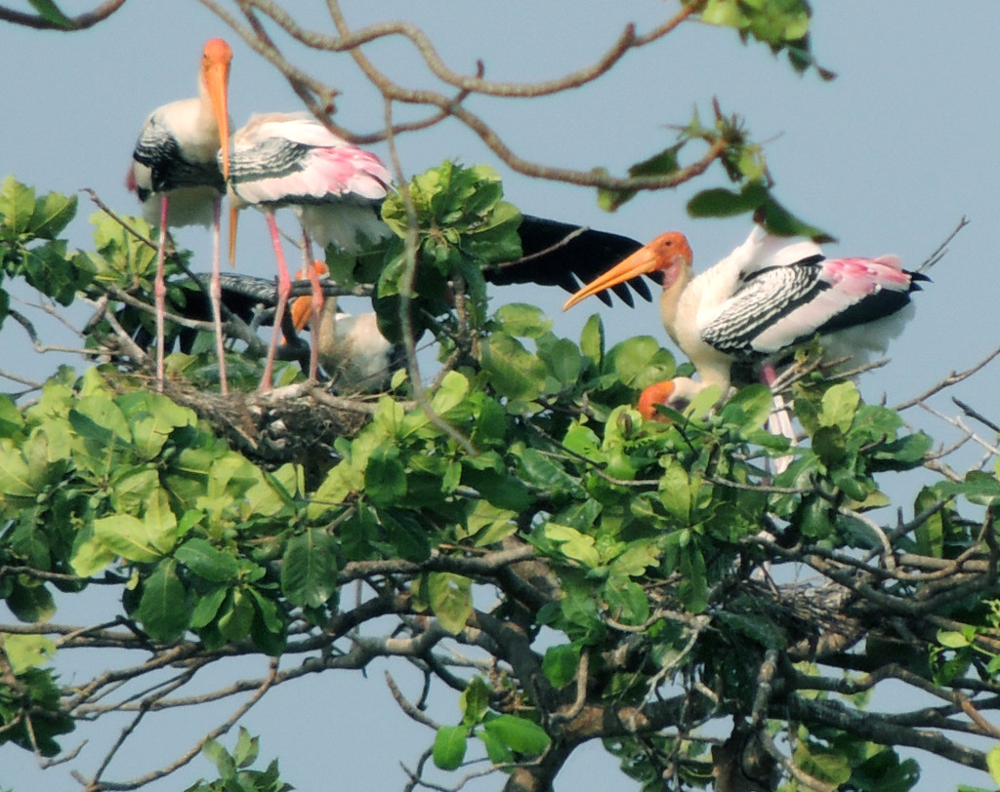

Kumarakom Bird sancturary

Kumarakom Bird Sanctuary
Kumarakom Bird Sanctuary is among the most popular bird watching spots in the country. Spread out over 14 hectares, one comes across numerous rare avian species in these parts. Located on the banks of the Vembanad Lake in Kottayam, one gets to see a variety of migratory birds that flock in thousands, ranging from places like the Himalayas to Siberia.
People who visit in June and August are treated to many rare sights. This is the breeding season of the resident wetland birds such as Indian Darter, Little Cormorant, different species of egrets and herons, White Ibis and several species of kingfishers. People also get to see the waterfowl, cuckoo, owl, water duck, Siberian Cranes, parrots, teal, larks, flycatchers and wood beetles. Boating trips around the sanctuary is extremely relaxing and this is among the most visited places in Kottayam district.Local birds like the water fowl, cuckoo, owl and water hen, other common varieties like the wood pecker, sky lark, crane and parrots can also be spotted here. 91 Species of local 50 species of migratory birds are found here. The best time to bird watch is June-August and migratory birds during November-February. A cruise along the Vembanad Lake is the best way to experience the sanctuary.House Boats and motorboats are available on hire for bird watching cruises in the Lake.schedule your trip between November to February, which is considered the best time to watch migratory birds. Whereas for those looking to have a better view of the local birds, the months of June to August are the best. You can either take a walk across the sanctuary or indulge in a houseboat or motorboat cruise.